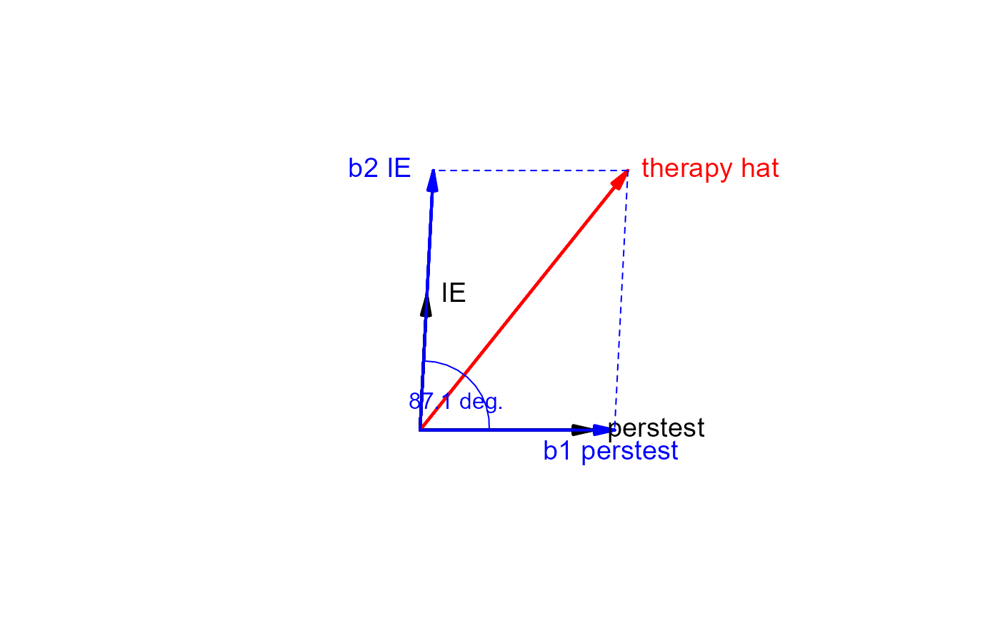

regvec3d calculates the 3D vectors that represent the projection of a two-variable multiple
regression model from n-D observation space into the 3D mean-deviation variable space that they span, thus
showing the regression of y on x1 and x2 in the model lm(y ~ x1 + x2).
The result can be used to draw 2D and 3D vector diagrams accurately reflecting the partial and marginal
relations of y to x1 and x2 as vectors in this representation.
regvec3d(x1, ...)
# S3 method for formula
regvec3d(
formula,
data = NULL,
which = 1:2,
name.x1,
name.x2,
name.y,
name.e,
name.y.hat,
name.b1.x1,
name.b2.x2,
abbreviate = 0,
...
)
# S3 method for default
regvec3d(
x1,
x2,
y,
scale = FALSE,
normalize = TRUE,
name.x1 = deparse(substitute(x1)),
name.x2 = deparse(substitute(x2)),
name.y = deparse(substitute(y)),
name.e = "residuals",
name.y.hat = paste0(name.y, "hat"),
name.b1.x1 = paste0("b1", name.x1),
name.b2.x2 = paste0("b2", name.x2),
name.y1.hat = paste0(name.y, "hat 1"),
name.y2.hat = paste0(name.y, "hat 2"),
...
)The generic argument or the first predictor passed to the default method
Arguments passed to methods
A two-sided formula for the linear regression model. It must contain two quantitative predictors
(x1 and x2) on the right-hand-side. If further predictors are included, y,
x1 and x2 are taken as residuals from the their linear fits on these variables.
A data frame in which the variables in the model are found
Indices of predictors variables in the model taken as x1 and x2
Name for x1 to be used in the result and plots. By default, this is taken as the
name of the x1 variable in the formula, possibly abbreviated according to abbreviate.
Ditto for the name of x2
Ditto for the name of y
Name for the residual vector. Default: "residuals"
Name for the fitted vector
Name for the vector corresponding to the partial coefficient of x1
Name for the vector corresponding to the partial coefficient of x2
An integer. If abbreviate >0, the names of x1, x2 and y
are abbreviated to this length before being combined with the other name.* arguments
second predictor variable in the model
response variable in the model
logical; if TRUE, standardize each of y, x1, x2 to standard scores
logical; if TRUE, normalize each vector relative to the maximum length of all
Name for the vector corresponding to the marginal coefficient of x1
Name for the vector corresponding to the marginal coefficient of x2
An object of class “regvec3d”, containing the following components
The “lm” object corresponding to lm(y ~ x1 + x2).
A 9 x 3 matrix, whose rows correspond to the variables in the model,
the residual vector, the fitted vector, the partial fits for x1, x2,
and the marginal fits of y on x1 and x2.
The columns effectively represent x1, x2, and y, but
are named "x", "y" and "z".
If additional variables are included in the model, e.g., lm(y ~ x1 + x2 + x3 + ...), then
y, x1 and x2 are all taken as residuals from their separate linear fits
on x3 + ..., thus showing their partial relations net of (or adjusting for) these additional predictors.
A 3D diagram shows the vector y and the plane formed by the predictors,
x1 and x2, where all variables are represented in deviation form, so that
the intercept need not be included.
A 2D diagram, using the first two columns of the result, can be used to show the projection
of the space in the x1, x2 plane.
In these views, the ANOVA representation of the various sums of squares for the regression
predictors appears as the lengths of the various vectors. For example, the error sum of
squares is the squared length of the e vector, and the regression sum of squares is
the squared length of the yhat vector.
The drawing functions vectors and link{vectors3d} used by the plot.regvec3d method only work
reasonably well if the variables are shown on commensurate scales, i.e., with
either scale=TRUE or normalize=TRUE.
regvec3d(formula): Formula method for regvec3d
regvec3d(default): Default method for regvec3d
Fox, J. (2016). Applied Regression Analysis and Generalized Linear Models, 3rd ed., Sage, Chapter 10.
Fox, J. and Friendly, M. (2016). "Visualizing Simultaneous Linear Equations, Geometric Vectors, and Least-Squares Regression with the matlib Package for R". useR Conference, Stanford, CA, June 27 - June 30, 2016.
Other vector diagrams:
Proj(),
arc(),
arrows3d(),
circle3d(),
corner(),
plot.regvec3d(),
pointOnLine(),
vectors3d(),
vectors()
library(rgl)
therapy.vec <- regvec3d(therapy ~ perstest + IE, data=therapy)
therapy.vec
#> x y z
#> perstest 0.50000000 0.0000000 0.0000000
#> IE 0.02000000 0.3893584 0.0000000
#> therapy 0.60000000 0.7499516 0.2785185
#> residuals 0.00000000 0.0000000 0.2785185
#> therapy hat 0.60000000 0.7499516 0.0000000
#> b1 perstest 0.56147757 0.0000000 0.0000000
#> b2 IE 0.03852243 0.7499516 0.0000000
#> therapy hat 1 0.60000000 0.0000000 0.0000000
#> therapy hat 2 0.04000000 0.7787169 0.0000000
plot(therapy.vec, col.plane="darkgreen")
plot(therapy.vec, dimension=2)
